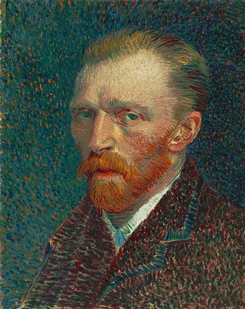
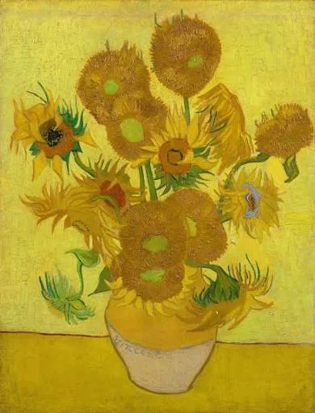
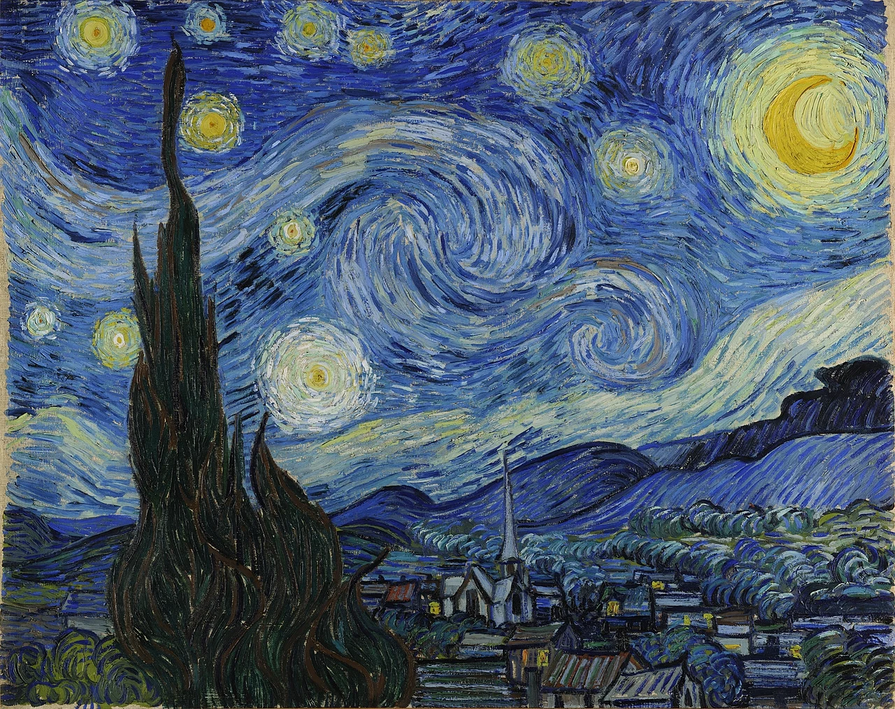
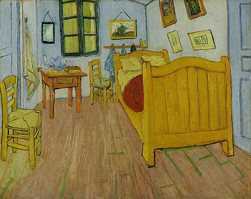
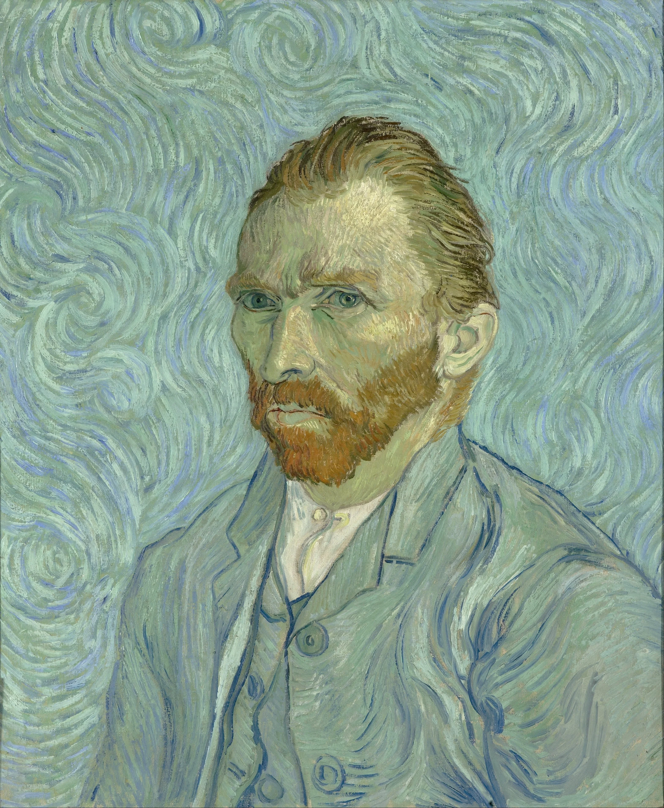
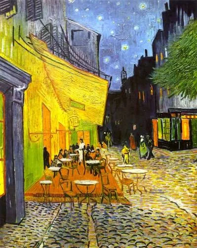
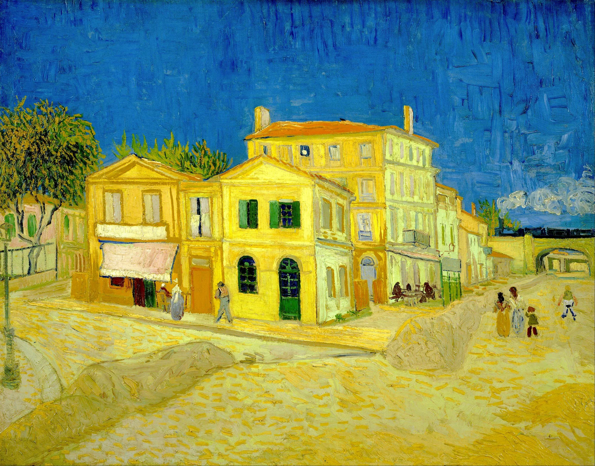
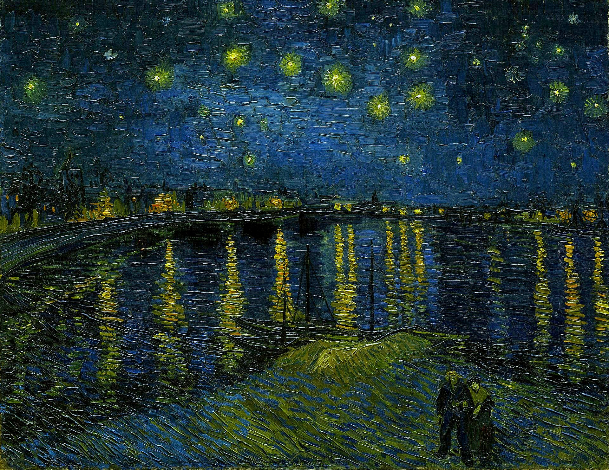
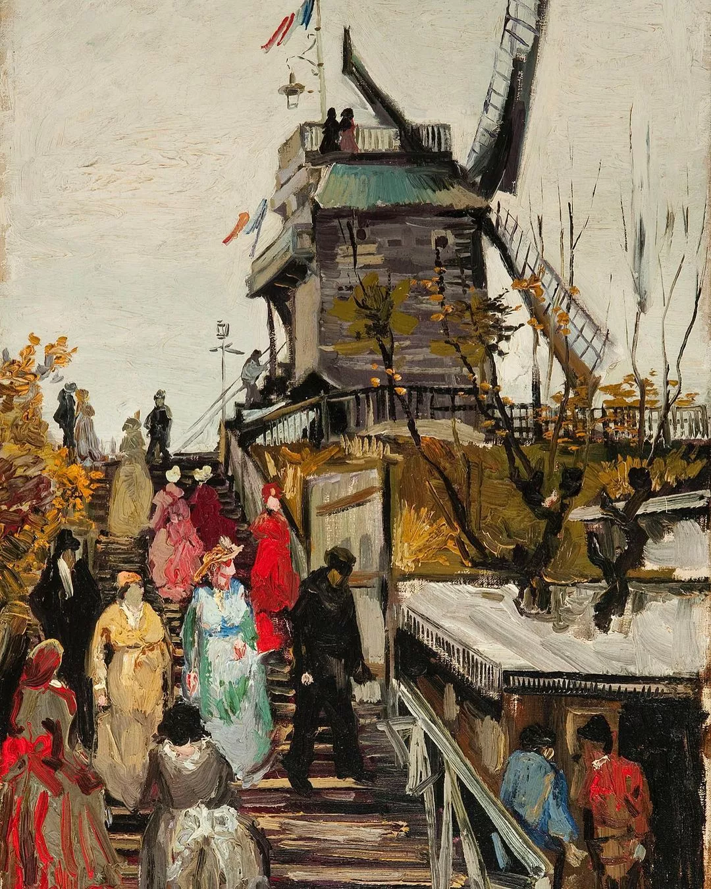
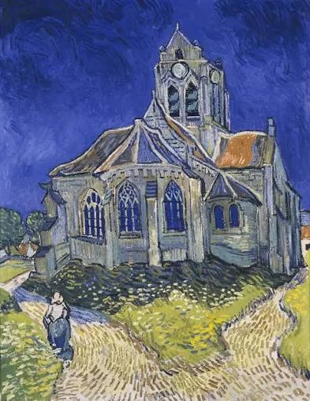

Unos 900 cuadros, más de 1600 dibujos… Y eso que Van Gogh empezó su carrera seria de pintor relativamente tarde (32 años). Eso sí… Desde entonces no pararía de pintar a un ritmo frenético durante 5 años, hasta su trágica muerte.
Mucho se ha hablado de su turbulenta vida y de su locura, de la famosa oreja y de su carácter intratable. Sin embargo, y por mucho que se especule, su arte era de lo más lúcido. Van Gogh no pintaba así por «estar loco», no veía las cosas así sino que fue un audaz experimentador y todo un erudito en la historia del arte.
Paradigma de pintor atormentado, de genio solitario que no vendió ni un miserable cuadro en vida (hoy su obra tiene un valor incalculable), es verdad que tenía serios trastornos psiquiátricos, pero lo cierto es que fue un pintor muy de su tiempo, que evolucionó de la monocromía típica de la pintura holandesa y del realismo de sus ídolos Millet o Rembrandt, al arte colorido con el que lo identificamos hoy en día, pasando por el inevitable influjo del impresionismo.
Tras superar las investigaciones impresionistas, Van Gogh y un puñado de otros amigos experimentadores (Gauguin, Cezanne, Toulouse-Lautrec…) crearon un nuevo estilo, que a falta de un nombre mejor se dio en llamar postimpresionismo. Los colores vivos, el abandono del naturalismo, las formas que parecen moverse o caerse… Todo ello fue fruto de una evolución artística lógica más que de los delirios de un demente.
La verdad es que Van Gogh sufrió siempre de depresiones e incluso intentó suicidarse varias veces. Es cierto que se cortó la dichosa oreja (el lóbulo en realidad), que contrajo una sífilis que dañó todavía más su cerebro, que se comía su pintura con plomo, que bebía absenta hasta quedar inconsciente, que sus relaciones sociales y sentimentales fueron desastrosas, que olía fatal, que fue un mantenido por su hermano Theo, que fue internado en psiquiátricos y que acabó pegándose un tiro en el pecho con una escopeta…
Pero sería muy simplista afirmar que su particular estilo (colores chillones, pinceladas bruscas…) se debe a su estado piscológico. En realidad Van Gogh pintaba de esa forma porque ese era su estilo, un estilo lúcida y conscientemente adquirido. Loco o cuerdo, sus cuadros eran relativamente independientes de su psique.
Pese a su fracaso comercial (más condicionado por su personalidad anti-comercial que por su arte) Van Gogh se codeó de tú a tú con los mejores artistas de su tiempo y gozó de su amistad y admiración. Incluso después de su muerte fue admirado y sigue siéndolo.
Su pintura es emocionante y atemporal, brutalmente sincera y muy popular (los profanos en la materia y los niños captan perfectamente la expresividad de su obra).
Muy fresca y espontánea (llegó a crear frenéticamente dos o tres cuadros al día), se percibe en su obra la necesidad imperante de pintar.

Los girasoles son una de las series de pinturas más conocidas de Van Gogh. El artista realizó varias versiones utilizando diferentes tonos de amarillo para representar las flores.

La noche estrellada fue pintada en 1889. En ella se observa un cielo nocturno con estrellas brillantes, una luna y formas onduladas. Es una de sus obras más reconocidas.

Esta pintura representa la habitación que Van Gogh tenía en la Casa Amarilla de Arlés, Francia. La obra destaca por sus colores y por la perspectiva sencilla de los muebles

Van Gogh realizó numerosos autorretratos durante su carrera. En ellos experimentó con diferentes colores, técnicas y formas de representar su rostro.

Esta obra muestra una terraza iluminada durante la noche en Arlés. Van Gogh utilizó colores intensos para representar el contraste entre la oscuridad del cielo y las luces del café.

El estilo de Vincent van Gogh se caracteriza por el uso de colores intensos, pinceladas gruesas y formas dinámicas. Sus pinturas transmiten movimiento y emoción gracias a las pinceladas curvas y marcadas.
Durante sus primeros años utilizó colores oscuros y tonos tierra, pero después comenzó a utilizar colores más brillantes, especialmente amarillos, azules y verdes. También recibió influencia del impresionismo, principalmente por el uso de la luz y el color.
Van Gogh no buscaba representar las cosas exactamente como se veían, sino expresar lo que sentía y la forma en que percibía el mundo. Por eso sus paisajes, retratos y escenas cotidianas tienen una apariencia muy particular.
Una característica importante de sus obras es la textura. Aplicaba la pintura con pinceladas visibles y en ocasiones directamente con bastante cantidad de pintura. Esta técnica ayudaba a crear sensación de movimiento y hacía que sus obras fueran fácilmente reconocibles.
Su estilo fue importante para el desarrollo del arte moderno y posteriormente influyó en movimientos como el expresionismo.
Vincent van Gogh realizó más de 2.000 obras durante su carrera, entre pinturas y dibujos. En sus obras representaron paisajes, personas, flores y escenas de la vida cotidiana. Su uso de colores intensos y pinceladas marcadas hizo que sus pinturas fueran fácilmente reconocibles.



